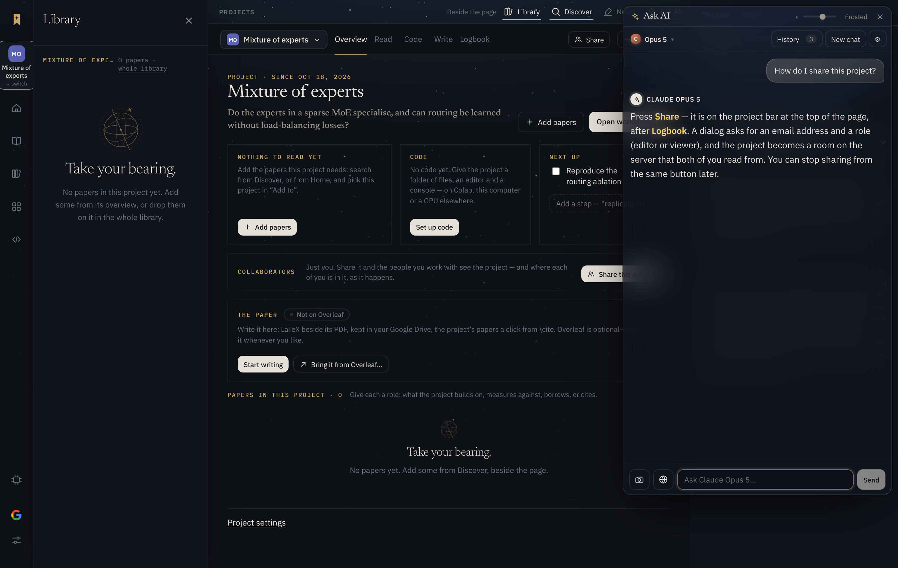
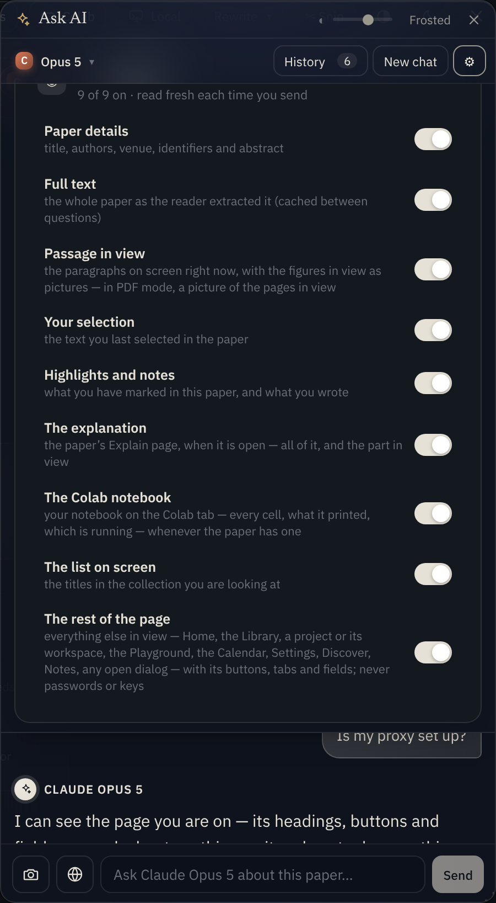
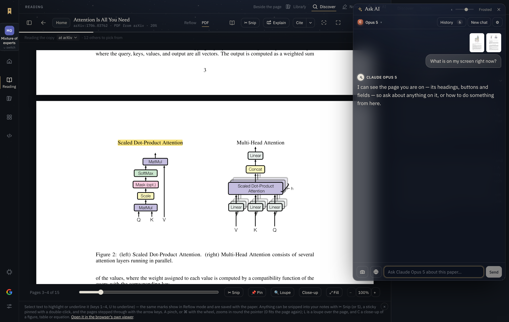

Koios · docs/ask-page
How the Ask AI window comes to see whatever page of Koios you are on — Home, the Library, a project, the Playground, the Calendar, Settings, a panel, a dialog — and knows the app well enough to say where to click; what goes with each question, what is kept out, and what it costs.
Before this change the Ask AI window read the paper: the open paper's details and text, the passage in view, the selection, the highlights, the Explain page and the Colab notebook. Anywhere else in the app it was told only a one-line <where> ("Browsing all papers") and, on a list, the titles on screen. Ask it how do I share this project? from a project's overview and it had never seen the page.
Now every question carries the rest of the window too, read off the page the way a person beside you would read it: headings, text, every button, tab and menu with whether it is on, open or disabled, and every field with what is typed in it. The model is also given a map of the app in its instructions, so it can answer with the control to press, named as it is on the screen.

[Overview] (on) [Read] [Code] [Write] [Logbook] [Share]), the question the project asks, its to-do as a tick box — so an answer can name Share on the bar. The answer shown is the smoke test's stand-in, not the model's.At the moment a question is sent, readScreen in src/App.tsx gathers a Screen (src/lib/assistant.ts) and screenBlock turns it into the <screen> block that leads the newest user message. Each part has a switch under ⚙; a part that is off is never assembled. The new part is page, written as <page_on_screen address="…" title="…">.
| Part (⚙ switch) | Tag in <screen> | Read from | When |
|---|---|---|---|
| Paper details | <paper> <abstract> | the library record | a paper is open |
| Full text | <paper_text> — a system block behind a cache breakpoint | the Reflow column, or the PDF's text through pdf.js | a paper is open |
| Passage in view | <passage_in_view> + pictures of the pages or figures on screen | the column's paragraphs on screen; the book's canvases | a paper is open |
| Your selection | <selected_text in="…"> | the last selection in the paper or the explanation | something is selected |
| Highlights and notes | <highlights> | the highlight records | the paper has any |
| The explanation | <explanation_text> (system) · <explain_page> · <explanation_in_view> | the Explain page's sections on screen | an explanation is written and open |
| The Colab notebook | <colab_notebook> | the notebook's cells and what they printed | the paper has a notebook |
| The list on screen | <list_on_screen> | the .paper-name elements on the page | no paper is open |
| The rest of the page (new) | <page_on_screen address="…" title="…"> | the DOM, walked top to bottom (pageOnScreen, src/lib/screen.ts) | always — every page, every panel, every dialog |
Two lines are also sharper than before. <where> now says when the Explain page is open with nothing written on it yet ("…the page offers to start"), and names the owner's Usage page. And the chat's empty state, when no paper is open, suggests What can I do on this page? and How do I start a project and add papers to it?.
pageOnScreen(skip, max) in src/lib/screen.ts walks document.body once, depth first, and writes lines. It takes the list of selectors to leave out (skip; the chat window is always on it) and a size limit (16,000 characters). At each element it makes one of seven decisions:
visit(), and the two rules under them. Decisions 1–5 stop the walk at that element; 6 and 7 go on into its children.| Kind | Written as | Notes |
|---|---|---|
| text, search, url, email, number, textarea | [field “Label”: “what is typed”] or (empty) | the value is cut at 300 characters; key-shaped text in it is replaced |
| password, or named/labelled key, token, secret, password, passcode | [field “Proxy token”: (filled in, withheld)] | the value never leaves the page — see §4 |
| checkbox / radio | [tick box “Dark”: on] · [choice “Week”: off] | |
| range | [slider “Opacity”: 80] | |
| select | [menu “Save to collection”: Reading list] | the chosen option's text |
| hidden, file | — | left out |
The label is the first that exists of: aria-label; a <label for>; the words of a wrapping <label> before the field (so the hint under it is not taken as its name); the placeholder; the title; the name. A control's name is its aria-label, else its text, else its title; its state is read from aria-pressed/aria-checked ("on"), aria-selected/aria-current ("current"), aria-expanded ("open") and disabled.
| Left out | How | Why |
|---|---|---|
| The Ask AI window itself | .assistant-win is always in skip | the question being typed, the thread, the drawer and the key boxes in it are not "the page"; the model has the thread already |
| The paper's column | .paper-body, .pdf-book added to skip when the paper's text was read | it goes as <paper_text> (cached) and <passage_in_view>; the pages as pictures |
| The Explain page's sections | .explain-scroll added when an explanation is on screen | it goes as <explanation_text> and <explanation_in_view>. Its start page, before anything is written, is not an explanation, so it is read |
| The notebook's cells | .nb-cells added when the paper has a notebook | they go as <colab_notebook>, every cell with its output, whether the tab is on screen or not |
| Anything off screen or hidden | the on-screen test in Figure 3 | the block describes what the reader sees; the rest would be cost without meaning |
| Scripts, styles, SVG, canvas, iframes, media | SKIP_TAGS | no words in them worth reading; an iframe's document is another origin anyway |
| Passwords and keys | three guards, below | a key pasted into Settings must never reach a model, the site's or anyone's |
The three guards on secrets. (1) A field of type="password", or whose name, id, autocomplete or label says key, token, secret, password or passcode, is written as (filled in, withheld) or (empty) — never its value. (2) Any text on the page, and any field value that does go, is passed through unkeyed(), which replaces what is shaped like an API key — sk-…, sk-ant-…, AIza…, ghp_/github_pat_…, xox…, ya29.… — with [a key, withheld]. (3) The Ask AI window's own key boxes are inside .assistant-win, which is never read. The system prompt also tells the model that keys are withheld on purpose and never to ask the reader to paste one into the chat.
pageNow in App.tsx hands pageOnScreen the selectors already covered by other blocks, and adds the address (location.pathname + search) and document.title.Assistant is given screen: () => Screen | Promise<Screen>. On ↵ it calls send(text, screen()); the promise is awaited inside send, after the question is already on screen, because reading a PDF's text the first time can take a moment.
readScreen (src/App.tsx) gathers the paper's parts as before. Then it lists what those parts already cover — .paper-body and .pdf-book if the text was read, .explain-scroll if an explanation is on screen, .nb-cells if there is a notebook — and calls pageNow(covered). Off a paper, it is pageNow() with nothing covered.
screenBlock(screen, on) writes <page_on_screen> last, after the highlights and the list, with address and title as attributes, cut at PAGE_MAX_CHARS (16,000) with a note. With the switch off the text is read but never put in the message; with it on and nothing on screen, no empty tag is written.
send builds one set of messages and system blocks for Claude, DeepSeek and Gemini alike; the page needs no pictures, so text-only models get it in full.
Reading the page tells the model what is there; it does not tell it what a button does or where to go when the thing needed is on another page. So SYSTEM in src/lib/assistant.ts now opens by saying the reader may be anywhere in the app and the model is its guide, explains how to read <page_on_screen>, and ends with a map: the pages in the rail and their keys (G, P, H, ⌘\, ⌘K, E, Z, R), the panels, Home's views, how papers are found and added, reading as PDF or Reflow, Explain and its three tabs, the Library's view controls and selection, a project's Board / Overview / Workspace / Logbook / Share, the Playground's six starts and three machines, the Calendar, and the Ask AI window's own controls. The whole prompt is 12,865 characters, about 3,200 tokens.
When <page_on_screen> is in the <screen> block:
- It is the rest of the window as the reader sees it now, read off the page top to
bottom: whatever page is open, the panels beside it (Library, Discover, Notes),
Settings or any other dialog. Headings start with #, a button, tab or menu item is in
[brackets] with "(on)", "(current)", "(open)" or "(disabled)" after it when it is, and a
field shows what is typed in it. Its "address" is the page's path in the app. …
- Use it to answer about anything they are looking at … and to guide them: name the
button or tab exactly as it is written there, say where it is ("the Workspace tab at
the top of the project"), one step per line when there are several. If what they need
is not on this page, say which page or panel to go to first and how. Never invent a
control that is neither on the page nor in the map below; if you are not sure the app
can do something, say so.
- Passwords and keys are withheld from it on purpose; never ask the reader to paste one
into the chat.The rule "never invent a control" is the one that matters most: a guide that names a button that is not there is worse than none. The page block gives the model the exact labels; the map gives it the rest of the app only in broad strokes, and tells it to say so when unsure.
The ⚙ drawer's What the model sees section lists every part with a switch. The rest of the page is the ninth row and is on by default — for a visitor who had the window before this change too, since loadPrefs fills a missing switch from the defaults. Off, the text is never assembled.

ChatSettings in src/components/Assistant.tsx), scrolled to the switches: "9 of 9 on · read fresh each time you send". The rows come from CONTEXT_ROWS in src/lib/assistant.ts.From the project overview of Figure 1, the question How do I share this project? went with this (the model's instructions and the answer aside; cut where marked). Every line is what the smoke test captured from the request to the API:
<screen>
<where>Looking over the research project “Mixture of experts”, which asks: Do the experts in
a sparse MoE specialise, and can routing be learned without load-balancing losses?</where>
<page_on_screen address="/project/?id=c-moe" title="Mixture of experts · Koios">
[Home] [MO Mixture of experts ⌄ switch]
[Home]
[Reading]
[Library]
[Projects]
[Code]
[Compute] [Sign in and settings] [Settings]
## Library
[Close the library panel]
Mixture of experts 0 papers · [whole library]
…
Projects Beside the page
[Library] (on) [Discover] (on) [Notes] [Ask AI] (on)
[MO Mixture of experts]
[Overview] (on)
[Read] [Code] [Write]
[Logbook]
[Share]
[New project]
Project · since Oct 18, 2026
# Mixture of experts
[Do the experts in a sparse MoE specialise, and can routing be learned without load-balancing losses?]
[Add papers] [Open workspace →]
Nothing to read yet
Add the papers this project needs: search from Discover, or from Home, and pick this project in “Add to”.
[Add papers]
Code
No code yet. Give the project a folder of files, an editor and a console — on Colab, this computer or a GPU elsewhere.
[Set up code]
Next up
[tick box “Reproduce the routing ablation”: off] Reproduce the routing ablation
[field “Add a step — “replicate Table 2””: (empty)]
Collaborators
Just you. Share it and the people you work with see the project — and where each of you is in it, as it happens.
[Share this project]
…
[Project settings]
[Discover] (current) [Notes]
## Discover
[Close the discover panel]
Search papers and people
[field “Search papers and people”: (empty)]
[arXiv] [OpenAlex] [Semantic Scholar] [Crossref] [Google Scholar] (on) [Books & PDFs]
…
</page_on_screen>
</screen>
How do I share this project?Three things to notice. The rail comes first, so the model knows which page is current. Controls carry their state — [Overview] (on), [Google Scholar] (on), the tick box off — so "is X on?" is answerable. And the two places to share are both there by their exact labels, [Share] on the bar and [Share this project] in the Collaborators card, which is what lets the answer point at either.
With a paper open the same block is shorter, because the paper is subtracted. As a PDF, the pages in view went as two pictures and <passage_in_view> held their text, while the page block held the bar — [Reflow] [PDF] (on), [Read as a book, two pages side by side] [✂ Snip] [Explain], the hints line — and the Discover panel; not one [Page N] marker was in it. Reflowed, the same, with [Reflow] (on) and none of the column's sentences.

Measured by the smoke test on a 1500 × 950 window, in characters of the request. A token is roughly four characters, so the page block adds about 250–1,500 tokens to a question, on top of a system prompt that grew from about 2,000 to about 3,200 tokens with the map. It is not cached (it changes every send); the paper's 36–40 thousand characters are, as before.
<screen> block that was already sent. The paper's own text (36–40 thousand characters, cached) and the system prompt (12,865) are not drawn. The widest page block seen, Settings' Proxy tab with its long explanations, is still a third of the 16,000 limit.Reading the page is cheap for the browser: 1–3 ms on the Library page with Discover open (five runs, measured by the smoke test), most of it in getClientRects and getComputedStyle.
aria-label and no title, are not described. Icon buttons in the app carry labels, so the common ones read well ("Close the library panel"); a new one without a label would read as nothing.<list_on_screen> and inside the page block. The list's switch is kept for anyone who turns the page off; the duplication costs a few hundred characters.type="password", holding a secret of an unknown shape, would be read. None in the app is like that; a new one should get a label with key, token or password in it.| Check | Where | Result |
|---|---|---|
| Typecheck | npx tsc -b | clean |
| The screen block: the page part goes with its address and title, on its own switch, with or without a paper, cut at 16,000 with a note; the prompt explains the block and carries the map | scripts/assistant.test.mjs (node, no browser) | 56 pass |
The DOM reader on a test page: hidden and off-screen text left out, the chat window left out, a skip honoured, controls with their state, every field kind, a password and a key-named field withheld, a key in prose replaced, a wrapping label's hint not taken as its name, a dialog announced | a bundled pageOnScreen in Chromium (Playwright) | as expected |
| End to end, the real app: Home, Library + Discover, a project's overview and workspace, the Playground, the paper as PDF (pages as pictures, text cached, column subtracted) and reflowed, Settings announced as a window with the Proxy tab's token withheld, the Notes panel, the Explain start page, the ⚙ switch off and on, the cost in ms | scripts/ask-page-smoke.mjs — 53 checks against the request as sent to the API | all pass |
| The rest of the unit suite | npm run test:unit | unchanged: 6 failures in glass and google-signin that fail the same way on main |
Two flaws were found by the end-to-end run and fixed before this was written: words set in two spans came out as "paper s", and then, after the first fix, text in sibling boxes ran together ("ReadingBeside the page") — the joining rule in Figure 3 is the result. A third came from the Settings page: a wrapping <label> gave its whole hint as the field's name, and a token field with no name would have been withheld only by its type; the label is now cut at the field and counted in the secret test.
| File | What changed |
|---|---|
| src/lib/screen.ts | pageOnScreen(skip, max) and its helpers: the walk, the on-screen tests, the joining rule, fields and controls, the secret guards |
| src/App.tsx | pageNow(covered); readScreen adds page on every view, subtracting what other blocks cover; the sharper where lines |
| src/lib/assistant.ts | Screen.page; the page switch in ContextKey, CONTEXT_ROWS and the defaults; PAGE_MAX_CHARS; <page_on_screen> in screenBlock; the prompt's opening, its reading of the block, and the map |
| src/components/Assistant.tsx | the empty state's wording and suggestions off a paper |
| scripts/assistant.test.mjs | the page part of the screen block, and the prompt |
| scripts/ask-page-smoke.mjs | the end-to-end run; DOCS_OUT=docs/ask-page writes this document's screenshots |
| scripts/ask-page-pdf.mjs | prints this page to docs/ask-page.pdf |
| README.md | Ask AI → It sees the page you are on, and knows its way round the app |